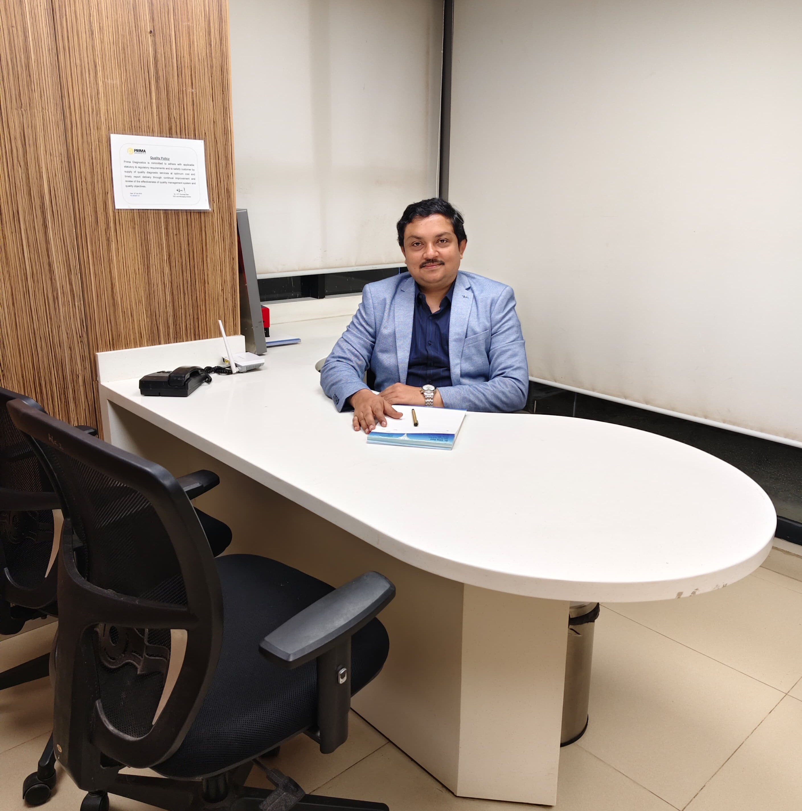

◉
Piles
Haemorrhoids can cause bleeding, discomfort, itching or a lump around the anus. Treatment depends on severity and symptoms.
Discuss Piles →Personalised evaluation and modern treatment options for common anorectal conditions — with the care and confidentiality you deserve.

Problems around the anus and rectum can be uncomfortable to discuss, but early evaluation can help identify the cause and the most appropriate treatment. Dr Uday Ravi provides individualised surgical consultation for common proctology conditions.
The right treatment depends on the diagnosis, severity, symptoms and your overall health. Consultation helps determine whether medicines, lifestyle measures, minimally invasive treatment or surgery is appropriate.
Don't self-diagnose. Share your symptoms with the doctor and get a personalised evaluation.
Book Private ConsultationComprehensive proctology care focused on accurate diagnosis and an appropriate treatment plan.
Haemorrhoids can cause bleeding, discomfort, itching or a lump around the anus. Treatment depends on severity and symptoms.
Discuss Piles →A small tear in the anal lining may cause sharp pain during or after bowel movements and sometimes bleeding.
Discuss Fissure →An abnormal tract between the anal canal and skin can lead to recurrent discharge, swelling or infection.
Discuss Fistula →A tract or cyst near the cleft of the buttocks can become painful or infected and may require evaluation.
Discuss Pilonidal Sinus →A painful collection of pus near the anus needs prompt medical assessment and appropriate treatment.
Discuss Abscess →Persistent or recurrent symptoms deserve a professional evaluation.
Every condition is different. Treatment is selected after clinical assessment rather than a one-size-fits-all approach.
Discuss symptoms, history, concerns and expectations in a confidential consultation.
Assess the condition and severity to understand the underlying problem.
Recommend appropriate medical, minimally invasive or surgical care when indicated.
Provide after-care guidance and follow-up based on your individual treatment.
Consult Dr Uday Ravi at a location convenient for you.
93, 1st A Main Rd, Sector A, Yelahanka Satellite Town, Bengaluru – 560064
⌖ View on Google Maps641/17/1/3, Kodigehalli Main Road, Shanthivana, Sahakarnagar, Bengaluru – 560092
⌖ View on Google Maps#09/1, 1st Main Road, Dr Rajkumar Road, 3rd Block, Rajajinagar, Bengaluru – 560010
⌖ View on Google Maps#472, 80 Feet Road, T Dasarhalli, Bengaluru – 560057
⌖ View on Google Maps725, Chinmaya Mission Hospital Rd, near CHINMAYA MISSION HOSPITAL, Indira Nagar 1st Stage, Defence Colony, Indiranagar, Bengaluru, Karnataka 560038
⌖ View on Google MapsOne doctor. Personalised surgical care.
Dr Uday Ravi is a highly accomplished surgeon with 15+ years of surgical experience. His practice includes general, laser, laparoscopic and robotic surgery, with a focus on precise, patient-centred care.
“My goal is to provide safe, effective and personalised care with compassion.”
— Dr Uday RaviTell us what you're experiencing. Your details will be prepared as a WhatsApp consultation request for Dr Uday Ravi.
Enter your details. Clicking the button opens WhatsApp with your information pre-filled.
General information to help you prepare for a consultation.
Get a professional evaluation and understand your treatment options.